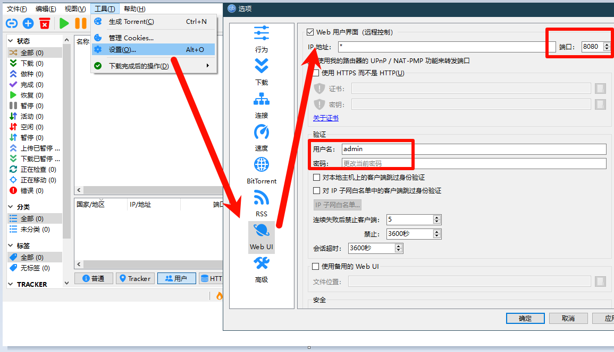
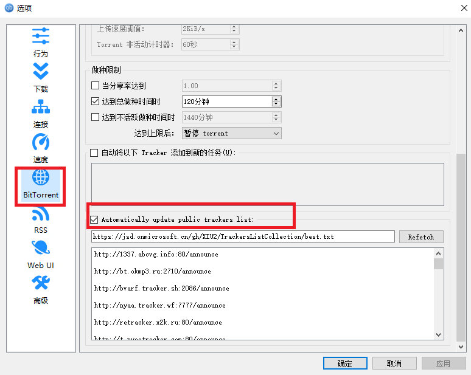
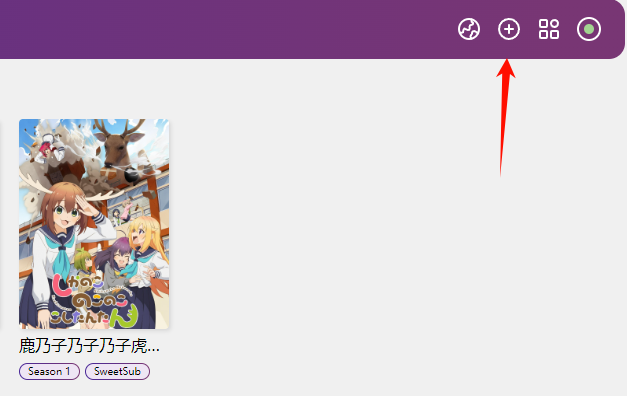

本文大部分时间在Linux环境中进行操作，项目推荐使用docker快速完成搭建，但我不喜欢用docker，
项目介绍
本文使用工具Autobangumi、JellyFin以及qBittorrent Enhanced Edition。
Autobangumi
AutoBangumi是基于 RSS 的全自动追番整理下载工具。只需要在Mikan Project等网站上订阅番剧，就可以全自动追番。 并且整理完成的名称和目录可以直接被 Plex、Jellyfin等媒体库软件识别，无需二次刮削。
项目地址:https://github.com/EstrellaXD/Auto_Bangumi
JellyFin
JellyFin是一款开源的媒体服务器软件，可以将音频、视频、照片等多媒体文件储存在服务器上，并通过浏览器或者移动设备来访问和管理这些文件。Jellyfin 是一个非常棒的媒体管理工具，支持多用户访问，支持自定义上传、下载、分享等多种功能。
项目地址:https://github.com/jellyfin/jellyfin
qBittorrent

qbittorrtne是一款强大轻巧的开源 BitTorrent 下载客户端软件。它允许用户通过 BitTorrent 协议来下载和分享文件。它跨平台支持 Windows、Mac以及 Linux！qBittorrent 旨在提供一个与 µTorrent 类似的用户体验，同样的小巧精悍，同时避免 µTorrent 中的广告和软件捆绑。妥妥的全平台 BitTorrent 下载利器！
本文使用非官方增强版，在 qBittorrent 的基础上增加了很多功能，例如：屏蔽迅雷、订阅 Tracker URL。
准备工作
- 一台启用虚拟机平台和 Linux 子系统功能的Windows机器
- 亿点点耐心
- 能访问国外网站(可选)
使用wsl并安装debian
1.在win10或win11的win图标处，右键->管理员权限启动 PowerShell，输入以下命令启用虚拟机平台：
1 | Enable-WindowsOptionalFeature -Online -FeatureName VirtualMachinePlatform |
2.命令运行后，接着输入以下命令开始Linux子系统：
1 | Enable-WindowsOptionalFeature -Online -FeatureName Microsoft-Windows-Subsystem-Linux |
命令运行结束后，命令行会出现是否重启的界面，输入y，重启即可，如果不想马上重启也可以自行重启。
3.重启后，在Microsoft store搜索debian，结果第一个就是，安装后打开等待安装完成即可。
或者使用命令行安装（推荐）
1 | wsl --install -d debian |
随后输入一遍用户名以及两遍密码。
4.检查一下更新
1 | sudo apt update -y |
4.把Debian软件源更换为清华源，能访问国外网站的可以跳过这一步。
1 | sudo apt install apt-transport-https ca-certificates -y |
1 | cat > sources.list.bak <<EOF |
1 | mv sources.list.bak /etc/apt/sources.list |
接着再输入
1 | sudo apt update -y |
5.安装所需依赖
1 | sudo apt install curl unzip python3 python3-venv -y |
开始安装
Autobangumi
1.下载最新版本文件（下载地址在国外，可能需要重试多次或者下载时间稍长）
1 | VERSION=$(curl -s "https://api.github.com/repos/EstrellaXD/Auto_Bangumi/releases/latest" | grep '"tag_name":' | sed -E 's/.*"([^"]+)".*/\1/') |
2.解压代码压缩包
1 | unzip app-v$VERSION.zip -d AutoBangumi |
3.创建虚拟环境并且安装依赖
1 | cd AutoBangumi/src |
4.创建配置和数据文件夹
1 | mkdir config |
5.运行 AutoBangumi
1 | python3 main.py |
我机器是24小时开着的，假如不小心重启了可以cd AutoBangumi/src再运行AutoBangumi。
JellyFin
下载地址:https://repo.jellyfin.org/?path=/server/windows/latest-stable/amd64 ，这里我选择下载压缩文件，看个人喜欢。解压完后进去运行jellyfin.exe即可，如何配置看后面。
qbittorrent
下载地址:https://github.com/c0re100/qBittorrent-Enhanced-Edition/releases
配置
qbittorrent

开启后记住端口号以及设置的用户名和密码配置autobangumi时需用到。

随后如图开启自动更新trackers，再点击确认即可。
JellyFin
在浏览器输入机器的ip地址，我在本机部署所以输入127.0.0.1:8096进入到jellyfin配置界面，跟着自己需求下一步即可。


媒体库稍后再添加


添加bangumi插件
完成后点击左上角 >控制台 ，点击下面的目录，再点击齿轮。接着添加储存库，名称填bangumi，存储库 URL填入 https://jellyfin-plugin-bangumi.pages.dev/repository.json
随后返回到目录，在右边找到Bangumi AniDB Open Subtitles进行安装，最后重启一次服务器。
进入控制台，可以看到Bangumi设置，登录后保存即可。
添加媒体库
接着添加媒体库，控制台 >媒体库 >添加媒体库


到底就完成jellyfin的基本设置了，还有一些额外的可选设置，稍后会说。
Autobangumi
在浏览器输入127.0.0.1:7892进入到Autobangumi配置界面。默认用户名：admin，默认密码：adminadmin。

进去后点击设置，把前面qbtitorrent填好的端口号和用户名密码以及视频下载位置填好，和jellyfin设置的媒体库文件夹位置一致。
蜜柑计划
蜜柑计划是一个番剧 BT 资源整合网站，其主要特点是整合某部番剧现有的字幕组资源，按番剧放送时间分门别类，并支持更精细的简繁分类，以供快速索引。
官方网站:https://mikanani.me，进不去也可以进入这个网站https://mikanime.tv。
进去要订阅的番剧，右击字幕组旁边的rss按钮复制链接即可。

回到Autobangumi，点击右上角的加号。

粘贴复制的链接，把链接前面的 mikanani.me修改成mikanime.tv（如果可以访问mikanani.me 则不用修改），点击添加，等待加载完再点订阅即可。
更多配置
在jellyfin进入控制台 >播放 >转码，启用备用字体，选择额外的字体路径可加载更多字体。

拓展阅读
如果看完还有不懂的地方，可以阅读以下文章，其他的我不是很懂。
Windows本地部署全自动追番AutoBangumi无需Docker容器WSL解决国内无法访问蜜柑CloudFlare反向代理
版权声明
所有文章除特别声明外均系本人自主创作，转载及引用请联系作者，并注明出处（作者、原文链接等）。
爬虫的要是爬过去还把关于我的标识删了，你的自拍就是你的全家福。